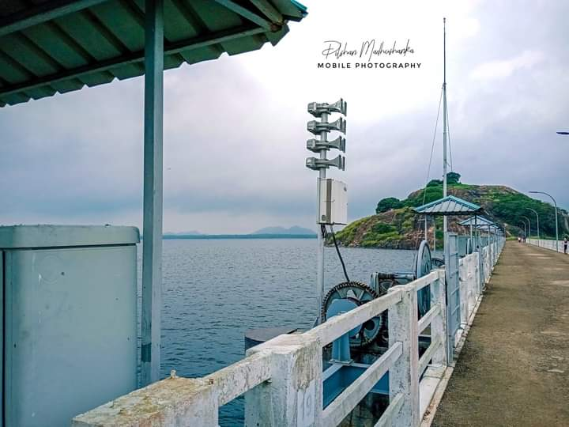
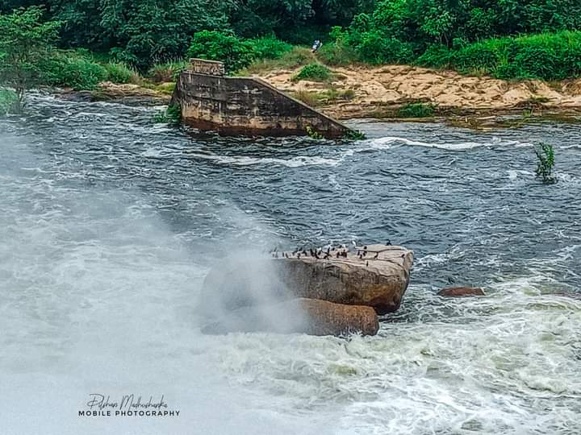

රාජාංගනයට සාදරයෙන් පිළිගනිමු Welcome to Rajanganaya
අනුරාධපුර දිස්ත්රික්කයේ පිහිටි රාජාංගනය යනු සශ්රීක කෙත්වතු, මනරම් රාජාංගනය ජලාශය සහ ආගන්තුක සත්කාරයට ලැදි ජනතාවක් වෙසෙන සුන්දර ප්රදේශයකි. Located in the Anuradhapura District, Rajanganaya is a picturesque region blessed with lush paddy fields, the scenic Rajanganaya Reservoir, and warm, hospitable people.



📞 අප හා සම්බන්ධ වන්න (Contact Us) 📞 Get in Touch With Us
info@rajanganaya.lk
රාජාංගනය ජලාශය Rajanganaya Reservoir
කලා ඔය හරස් කරමින් ඉදිකර ඇති රාජාංගනය ජලාශය අනුරාධපුර සහ කුරුණෑගල දිස්ත්රික්ක මායිමේ පිහිටි විශාලතම ජලාශයකි. 1960 දශකයේදී පමණ නවීකරණය කරන ලද මෙම ජලාශය අක්කර අඩි 81,000කට අධික ජල ධාරිතාවකින් යුක්ත වේ. ප්රදේශයේ පානීය ජල අවශ්යතාවය සහ කෘෂිකාර්මික කටයුතු සඳහා ප්රධාන ජල මූලාශ්රය වන්නේ මෙම ජලාශයයි.
Built across the Kala Oya river, the Rajanganaya Reservoir is one of the largest reservoirs bordering the Anuradhapura and Kurunegala districts. Restored in the 1960s, it holds a capacity of over 81,000 acre-feet of water, serving as the lifeline for agriculture and drinking water in the region.

රාජාංගනය කෘෂිකර්මාන්තය Agriculture in Rajanganaya

රාජාංගනය යනු ශ්රී ලංකාවේ ප්රධාන වී සහ අතිරේක බෝග නිෂ්පාදන කලාපයකි. යල සහ මහ කන්න දෙකේදීම රාජාංගනය ජලාශයේ ජලයෙන් අක්කර දහස් ගණනක වී වගා කෙරේ. වී වගාවට අමතරව කෙසෙල්, බඩඉරිඟු, එළවළු සහ පලතුරු වගාවන්ද මෙහි ඉතා සාර්ථකව සිදු කෙරේ.
Rajanganaya is a major hub for paddy and cash crop production in Sri Lanka. Irrigated by the Rajanganaya Reservoir during both Yala and Maha seasons, thousands of acres of paddy are cultivated alongside bananas, maize, vegetables, and tropical fruits.
රාජාංගනය ධීවර කර්මාන්තය Inland Fisheries
රාජාංගනය ජලාශය ආශ්රිතව මිරිදිය ධීවර කර්මාන්තය ඉතා දියුණු මට්ටමක පවතී. පවුල් සිය ගණනකගේ ප්රධාන ජීවනෝපාය වන්නේ මිරිදිය මසුන් ඇල්ලීමයි. තිලාපියා, කැට්ලා, රෝහු සහ ලූලා වැනි මත්ස්ය විශේෂ බහුලව මෙහිදී අල්ලා ගන්නා අතර ප්රදේශයේ මෙන්ම පිටපළාත්වල පාරිභෝගිකයන්ටද නැවුම් මිරිදිය මසුන් සපයනු ලැබේ.
Freshwater fishing thrives around the Rajanganaya Reservoir, providing the primary livelihood for hundreds of local families. Varieties such as Tilapia, Catla, Rohu, and Snakehead are harvested daily, supplying fresh inland fish to both local and regional markets.

රාජාංගනය සංචාරක කර්මාන්තය Tourism & Attractions

සොබාදහමට ආදරය කරන දෙස් විදෙස් සංචාරකයින්ට රාජාංගනය කදිම ගමනාන්තයකි. සන්ධ්යා කාලයේ රාජාංගනය වැව් බැම්ම මත සිට හිරු බැස යන දසුන නැරඹීම, කුරුල්ලන් නැරඹීම (Bird Watching), අසල පිහිටි විල්පත්තු ජාතික වනෝද්යානයට පිවිසීම සහ ඓතිහාසික රාජාංගනය ශෛලමය නටබුන් නැරඹීම සංචාරකයින්ට අපූරු අත්දැකීමක් ලබා දෙයි.
Rajanganaya is a hidden gem for nature lovers. Watching the sunset over the reservoir bund, bird watching, easy access to Wilpattu National Park, and exploring the ancient stone ruins of Rajanganaya offer unforgettable experiences for visitors.
රාජාංගනය ජන ජීවිතය People & Lifestyle
රාජාංගනය ජනපද ව්යාපාරය යටතේ දිවයිනේ විවිධ ප්රදේශවලින් පැමිණ පදිංචි වූ ජනතාවක් මෙහි වෙසෙති. වැවයි දාගැබයි ගමයි පන්සලයි යන සංස්කෘතියට අනුකූලව, ඉතා සමගියෙන් සහ අන්යෝන්ය සහයෝගයෙන් ජීවත් වන ගැමි සමාජයක් මෙහි දැකගත හැකිය. කෘෂිකාර්මික චාරිත්ර, අලුත් අවුරුදු උත්සව සහ ආගමික වතාවත් ඔවුන්ගේ ජීවිතයේ ප්රධාන අංගයන් වේ.
Settled under the Rajanganaya colonization scheme from various parts of the island, the community lives in harmony guided by the traditional Sri Lankan ethos of "Tank, Dagoba, Village, and Temple." Agricultural rituals, Sinhala New Year festivities, and religious traditions shape their daily lives.

රාජාංගනය ඉතිහාසය History of Rajanganaya

රාජාංගනයට අනුරාධපුර යුගය දක්වා දිවෙන දීර්ඝ ඉතිහාසයක් ඇත. පුරාණයේ "රාජාංගන විහාරය" හෙවත් වර්තමාන රාජාංගනය රජමහා විහාරය, අෂ්ටඵලරුහ බෝධීන් වහන්සේ නමක් රෝපණය කළ පූජනීය ස්ථානයක් ලෙස ඉතිහාසයේ සඳහන් වේ. ශෛලමය බුද්ධ ප්රතිමා, පැරණි සෙල්ලිපි සහ පුරාවිද්යාත්මක නටබුන් මගින් මෙම ප්රදේශයේ පෞරාණික ශ්රී විභූතිය මැනවින් පෙන්නුම් කරයි.
Rajanganaya boasts a rich history dating back to the Anuradhapura era. The ancient Rajanganaya Raja Maha Viharaya is revered as one of the sacred sites where an Ashtapala Bodhi sapling was planted. Stone Buddha statues, ancient inscriptions, and archaeological ruins bear witness to its glorious past.